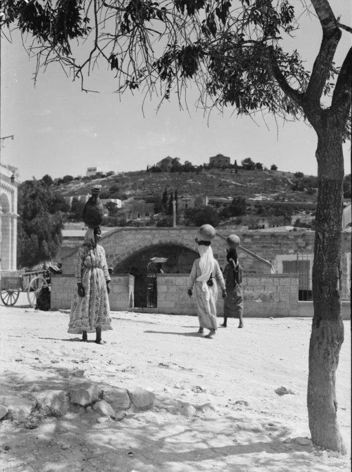
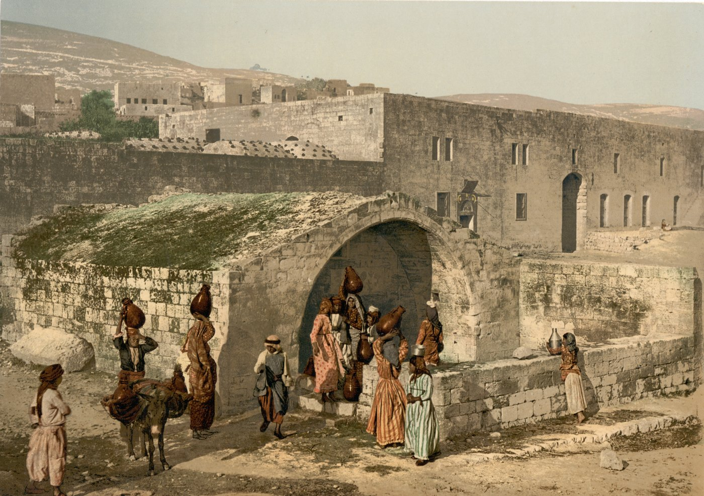
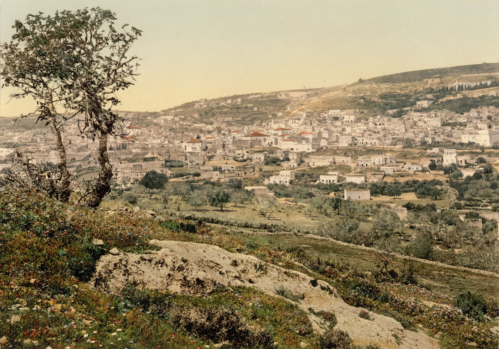
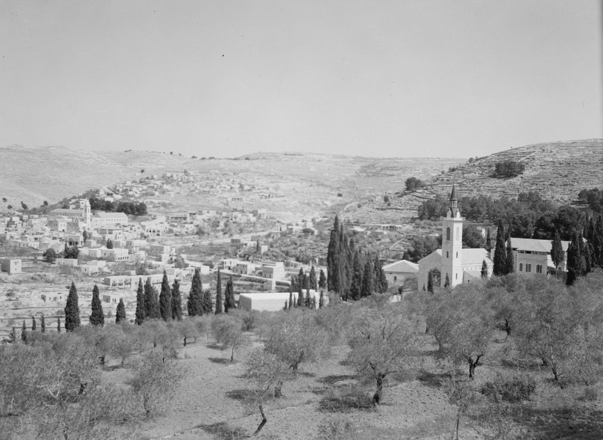
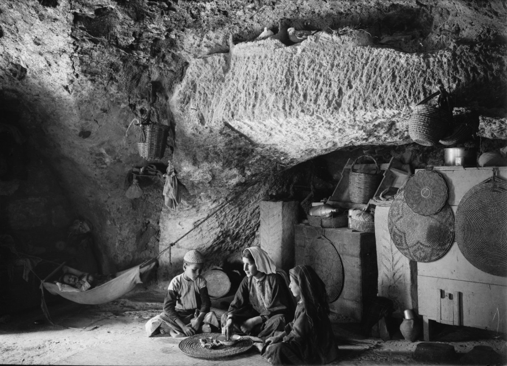
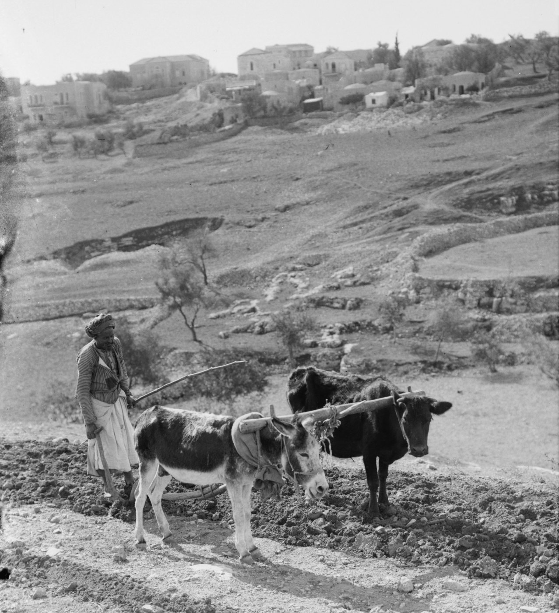
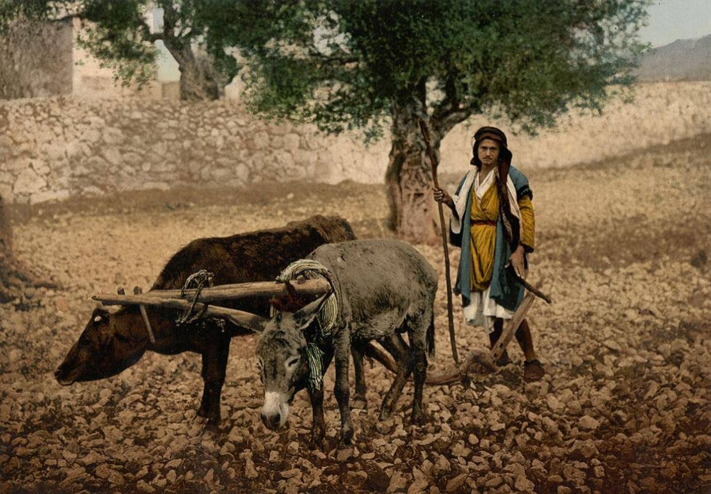

그림 네 점으로 걷는 누가복음 1~2장. 주일마다 그림 한 점, 질문 하나. 천사의 인사에서 목자들의 밤까지.
1 그림을 함께 보고2 질문을 던지고3 그 시절로 가 본 뒤4 본문을 같이 읽어요
그림 아래 아이에게 보여 주기를 누르면 그림과 그 땅의 옛 사진을 화면 가득 띄우고, 질문을 하나씩 넘길 수 있어요. 흑백 사진은 누르면 AI로 색을 입힌 가상 복원으로 바뀌어요.
검수 전 초안이에요. AI가 출처를 모아 쓴 글이라, 카드마다 맨 아래 ‘근거 보기’와 대조해 확인해 주세요.
네 주를 잇는 두 말: “무서워하지 말라”(1:30 · 2:10), “빨리”(1:39 · 2:16). 천사는 마리아에게도 목자들에게도 같은 말을 했고, 마리아도 목자들도 서둘러 길을 나섰어요.
「수태고지」 시모네 마르티니·리포 멤미, 1333년 이탈리아 피렌체, 우피치 미술관
1주 · 천사의 인사11월 29일 대림절 첫째 주일 · 누가복음 1:26~38
이 그림이 여는 질문
마리아는 왜 몸을 움츠렸을까요?
금빛 바탕 위로 천사의 인사말이 글자가 되어 날아갑니다. 마리아는 옷깃을 여미며 몸을 뒤로 뺍니다.
그림 속에서 찾아보기
천사의 입에서 마리아 쪽으로 이어지는 금빛 글자를 따라가 보세요.
천사가 든 나뭇가지와 가운데 꽃병의 하얀 꽃을 찾아보세요. 둘은 어떻게 다른가요?
맨 위 가운데, 천사들에게 둘러싸인 하얀 비둘기를 찾아보세요. 성령을 뜻해요(1:35).
이야기
천사 가브리엘이 갈릴리의 작은 마을 나사렛에 사는 마리아를 찾아와 인사했어요. “은혜를 받은 자여 평안할지어다 주께서 너와 함께 하시도다”(1:28). 마리아는 이 말을 듣고 놀랐어요(1:29).
1333년 시모네 마르티니와 처남 리포 멤미가 시에나 대성당 제단에 놓으려고 그렸어요. 천사의 인사말은 라틴어 글자로 금바탕에 도드라지게 새겨, 천사의 입에서 마리아 쪽으로 흘러가게 했어요. 700년 전의 말풍선이에요.
천사가 든 것은 백합이 아니라 올리브 가지예요. 수태고지 그림에서는 드문 일이에요. 노아의 비둘기가 물고 온 감람나무 잎(창 8:11)처럼 평화와 화해의 표시지요. 백합은 둘 사이 꽃병에 꽂혀 있어요.
그 시절로 가 보기
그곳은 · 나사렛갈릴리 언덕의 작은 마을이에요. 구약 성경에도, 1세기 유대 역사가 요세푸스의 책에도 나오지 않아요. 나다나엘은 “나사렛에서 무슨 선한 것이 날 수 있느냐”고 물었지요(요 1:46).

나사렛의 ‘마리아의 샘’ · 1930년대 19세기까지 마을에 하나뿐인 물터였어요. 2세기의 외경 『야고보 원복음서』에는 마리아가 물동이를 들고 물을 길으러 나갔다가 천사의 첫인사를 들었다는 이야기가 있어요. 성경에는 없는 이야기지만, 이 전승 때문에 샘물이 솟는 자리 위에 정교회의 가브리엘 성당이 서 있어요. 원본 크게 보기가상 복원 · AI가 색을 짐작해 입힌 것이라 실제 색과 다를 수 있어요.

같은 샘 · 1890년대 컬러 인쇄본 흑백 사진보다 40여 년 앞서 같은 샘을 담았어요. 흑백 원판에, 사진가가 현장에서 적어 둔 색 메모대로 색을 입혀 찍어 낸 ‘포토크롬’이에요. 물동이를 실은 나귀도 찾아보세요. 원본 크게 보기
눈 감고 상상해 보기수도도 전기도 없는 작은 마을에서 날마다 샘에 가서 물을 길어 와야 했다면, 샘가에서 누구를 만나고 무슨 이야기를 나눴을까요?
그림: 시모네 마르티니·리포 멤미, 「수태고지」, 1333년, 피렌체 우피치 미술관. 사진: 위키미디어 공용(Google Art Project, 저작권 만료). 옛 사진: 미국 의회도서관 매슨 컬렉션, ‘Virgin's Fountain in Nazareth’(1930년대, 위키미디어 공용, 알려진 저작권 제한 없음). 1890년대 컬러 인쇄본: 미국 의회도서관 포토크롬 컬렉션, ‘The virgin's fountain, Nazareth’(위키미디어 공용, 알려진 저작권 제한 없음).
「방문」 콘스탄츠의 하인리히 장인(으로 전해짐), 1310~1320년 무렵 호두나무에 채색·금박, 수정 · 미국 뉴욕, 메트로폴리탄 미술관
2주 · 두 엄마의 만남12월 6일 대림절 둘째 주일 · 누가복음 1:39~45
이 조각이 여는 질문
엄마 배 속 아기도 기뻐할 수 있어요?
두 엄마가 손을 맞잡았습니다. 배에 박힌 수정이 작은 창문처럼 반짝입니다.
조각 속에서 찾아보기
두 사람의 배에서 반짝이는 수정을 찾아보세요. 그 안에 무엇이 있었을까요?
두 사람의 손을 따라가 보세요. 손이 어디에 놓여 있나요?
누가 마리아이고 누가 엘리사벳일까요? 왜 그렇게 생각해요?
이야기
천사의 소식을 들은 마리아는 빨리 유대 산골의 한 동네로 친족 엘리사벳을 찾아갔어요(1:39~40). 마리아가 문안하자 엘리사벳 배 속의 아기, 훗날의 세례 요한이 기뻐 뛰놀았어요(1:41, 44).
이 조각은 1310~1320년 무렵, 지금의 스위스 보덴 호수 근처 카타리넨탈 도미니코회 수녀원에 있던 거예요. 호두나무를 깎아 색을 칠하고 금을 입혔는데, 그 칠과 금박이 거의 그대로 남아 있어요.
두 사람의 배에 박힌 수정 안으로는 원래 아기들의 그림이 보였을 거라고 해요. 수녀들이 창문 너머를 들여다보듯 배 속의 아기를 묵상하게 돕는 장치였다고 보는 연구도 있어요.
그 시절로 가 보기
그곳은 · 유대 산골 마을성경은 마을 이름 없이 ‘유대 한 동네’라고만 해요(1:39). 12세기 무렵부터 예루살렘 서쪽 마을 아인 카림(엔 케렘)을 그곳으로 여겨 왔고, 지금 그곳에 방문 기념 성당이 있어요. 나사렛에서 120킬로미터쯤 되는 먼 길이에요.

떠난 곳 · 나사렛 · 1890년대 컬러 인쇄본 마리아가 길을 떠난 마을이에요. 1890년대 모습이라 예수님 시대의 작은 마을보다 훨씬 커졌어요. 흑백 원판에, 사진가가 적어 둔 색 메모대로 색을 입혀 찍어 낸 ‘포토크롬’이에요. 원본 크게 보기

도착한 곳 · 아인 카림 · 1925년 언덕과 골짜기 사이에 돌집이 모여 있는 마을이에요. 누가복음이 말하는 ‘산골’(1:39)이 어떤 곳인지 눈으로 볼 수 있어요. 원본 크게 보기가상 복원 · AI가 색을 짐작해 입힌 것이라 실제 색과 다를 수 있어요.
눈 감고 상상해 보기자동차도 기차도 없이 120킬로미터를 걸어서 간다면 며칠이 걸릴까요? 밤에는 어디서 쉬었을까요? 마침내 엘리사벳의 집 문을 두드리는 순간, 마리아의 마음은 어땠을까요?
사진: 메트로폴리탄 미술관 공개 이미지(CC0), 위키미디어 공용. 옛 사진: 미국 의회도서관 매슨 컬렉션, ‘View of Ain Karim’(1925년, 위키미디어 공용, 알려진 저작권 제한 없음). 1890년대 컬러 인쇄본: 미국 의회도서관 포토크롬 컬렉션, ‘From the east, Nazareth’(위키미디어 공용, 알려진 저작권 제한 없음).
「그리스도의 탄생」 안드레이 루블료프(로 전해짐), 1405년 무렵 러시아 모스크바, 크렘린 블라고베셴스키 대성당
3주 · 구유에 누인 아기12월 13일 대림절 셋째 주일 · 누가복음 2:1~7
이 그림이 여는 질문
예수님은 정말 마구간에서 태어나셨어요?
검은 동굴, 하얗게 싸인 아기, 그리고 구유를 들여다보는 소와 나귀.
그림 속에서 찾아보기
아기 예수가 이 그림에 두 번 나와요. 어디 어디에 있나요?
까만 동굴 속 구유를 들여다보는 동물 두 마리를 찾아보세요.
맨 위에서 길게 내려오는 빛줄기를 따라가 보세요. 어디에 닿나요?
이야기
누가복음은 아주 짧게 말해요. 마리아가 첫아들을 낳아 강보로 싸서 구유, 곧 가축의 먹이통에 뉘었다고요(2:7). ‘마구간’이라는 말은 이 이야기에 나오지 않아요.
“여관에 있을 곳이 없음이러라”의 ‘여관’(그리스어 카탈뤼마)은 예수님이 마지막 유월절을 지키신 ‘객실’(22:11)과 같은 낱말이에요. 그래서 붐비는 집의 손님방에 자리가 없었다고 읽는 학자가 많고, 요즘 영어 성경 가운데는 ‘손님방’으로 옮긴 것도 있어요.
2세기의 순교자 유스티누스는, 요셉이 마을에서 묵을 곳을 찾지 못해 근처 동굴에 머물렀다고 전했어요. 그래서 동방 교회의 성탄 이콘은 동굴을 그려요. 이 이콘은 1405년 무렵 안드레이 루블료프가 그린 것으로 전해져요.
알고 보면
소와 나귀는 누가복음에 나오지 않아요. “소는 그 임자를 알고 나귀는 그 주인의 구유를 알건마는”(사 1:3)에서 왔다고 보며, 4세기 무렵부터 거의 모든 성탄 그림에 들어갔어요.
그 시절로 가 보기
그곳은 · 베들레헴예루살렘 남쪽의 작은 마을, ‘다윗의 동네’예요(2:4). 2세기부터 그리스도인들이 예수님이 나신 곳으로 기억해 온 동굴 위에 339년 첫 교회가 봉헌되었고, 6세기에 다시 지은 예수탄생교회가 지금도 서 있어요. 3세기 중엽 오리게네스도 베들레헴에 가면 그분이 나신 동굴과 동굴 안의 구유를 보여 준다고 적었어요. 2012년 유네스코 세계유산이 되었어요.
베들레헴 ‘탄생 동굴’ · 1950~70년대 예수탄생교회 아래, 예수님이 나신 곳으로 기억해 온 동굴이에요. 위 영상에서 이 동굴 안을 볼 수 있어요. 원본 크게 보기

베들레헴의 ‘구유가 있는 집’ · 1920년 사진의 원래 제목은 ‘구유가 있는 집. 방 일부가 동굴. 강보에 싸인 아기와 비둘기 집’이에요. 그물 요람 속 아기와 바위 턱의 비둘기를 찾아보세요. 옛 시골집은 밤이면 가축을 집 안 아래쪽 칸에 들이고, 식구들이 지내는 자리 가까이에 여물통을 두었다고 보는 학자들이 있어요. 원본 크게 보기가상 복원 · AI가 색을 짐작해 입힌 것이라 실제 색과 다를 수 있어요.

소와 나귀로 밭을 가는 농부 · 100년쯤 전 소는 밭을 갈고 나귀는 짐을 날랐어요. 그래서 소와 나귀는 한 집안의 귀한 재산이었어요. 욥의 재산 목록에도 소 오백 겨리와 암나귀 오백 마리가 들어 있고(욥 1:3), 십계명은 이웃의 소나 나귀를 탐내지 말라고 해요(출 20:17). 원본 크게 보기가상 복원 · AI가 색을 짐작해 입힌 것이라 실제 색과 다를 수 있어요.

다른 농부, 같은 모습 · 1890년대 컬러 인쇄본 흑백 사진과는 다른 농부지만, 소와 나귀를 한 멍에에 맨 같은 모습을 색으로 담았어요. 흑백 원판에, 사진가가 적어 둔 색 메모대로 색을 입혀 찍어 낸 ‘포토크롬’이에요. 흙과 옷, 소와 나귀의 색을 비교해 보세요. 원본 크게 보기
눈 감고 상상해 보기해가 지면 불빛은 작은 등잔 하나. 예수님은 등불을 등경 위에 두면 집 안 모든 사람이 밝아진다고 하셨어요(마 5:15). 등불 하나로 온 식구가 환해지는 집, 한쪽에서 소와 나귀가 숨 쉬는 소리가 들린다면 어떤 밤이었을까요?
옛 사진은 2천 년 전 모습 그대로는 아니지만, 성경 속 땅과 살림살이를 눈으로 볼 수 있어요.
VCS 전시 「Unto us a Child is Born」영어 · 한국 화가 김기창(운보, 1914~2001)의 「예수의 탄생」이 에티오피아의 이름 모를 화가, 파울라 레구의 작품과 함께 실려 있어요. 김기창은 한국전쟁 무렵 1년 동안 예수의 생애를 수묵화 30점으로 그렸어요.
Luke 1–2 through four works of art. One picture and one question each Sunday, from the angel’s greeting to the shepherds’ night.
1 Look at the art together2 Ask the question3 Step back in time4 Read the passage together
Tap Show it to the children under the art to fill the screen with the picture and old photos of the land, one question at a time. Tap a black-and-white photo to switch to an AI-colorized version.
This is a draft awaiting review. AI gathered the sources and wrote the text, so please check each card against ‘Sources’ at the bottom.
Two phrases tie the four weeks together: “Don’t be afraid” (1:30 · 2:10) and “with haste” (1:39 · 2:16). The angel said the same words to Mary and to the shepherds, and Mary and the shepherds both set out in a hurry.
The Annunciation Simone Martini and Lippo Memmi, 1333 Uffizi Gallery, Florence, Italy
Week 1 · The angel’s greetingNov 29 · First Sunday of Advent · Luke 1:26–38
The question this painting opens
Why did Mary shrink back?
Across the gold background, the angel’s greeting flies toward Mary as letters. Mary pulls her cloak close and leans away.
Things to find in the painting
Follow the gold letters that run from the angel’s mouth toward Mary.
Find the branch the angel is holding and the white flowers in the vase in the middle. How are they different?
At the top in the middle, find the white dove surrounded by angels. It stands for the Holy Spirit (1:35).
The story
The angel Gabriel came to Mary, who lived in Nazareth, a small town in Galilee, and greeted her: “Rejoice, you highly favored one! The Lord is with you” (1:28). Mary was “greatly troubled at the saying” (1:29).
Simone Martini and his brother-in-law Lippo Memmi painted it in 1333 for an altar in Siena Cathedral. They wrote the angel’s greeting in Latin letters raised from the gold ground, so that it flows from the angel’s mouth toward Mary. It is a speech bubble from 700 years ago.
What the angel holds is not a lily but an olive branch, which is rare in pictures of the Annunciation. Like the olive leaf the dove brought back to Noah (Gen 8:11), it is a sign of peace and reconciliation. The lilies stand in the vase between the two.
Step back in time
The place · NazarethA small village in the hills of Galilee. It is never mentioned in the Old Testament, nor in the books of the first-century Jewish historian Josephus. Nathanael asked, “Can any good thing come out of Nazareth?” (John 1:46).
‘Mary’s Well’ in Nazareth · 1930s Until the 19th century it was the village’s only water source. The second-century apocryphal Protoevangelium of James tells how Mary went out with a pitcher to draw water and heard the angel’s first greeting. The story is not in the Bible, but because of this tradition the Orthodox Church of St. Gabriel stands over the spring. View the originalAI colorized · AI guessed the colors, so they may differ from the real ones.The same well · 1890s color print Taken some 40 years before the black-and-white photo. It is a ‘photochrom’: color was added to a black-and-white negative, following color notes the photographer made on the spot, and then printed. Look for the donkey carrying water jars too. View the original
Close your eyes and imagineIf you lived in a small village with no running water or electricity and had to fetch water from the spring every day, who would you meet there, and what would you talk about?
Painting: Simone Martini and Lippo Memmi, The Annunciation, 1333, Uffizi Gallery, Florence. Photo: Wikimedia Commons (Google Art Project, public domain). Old photo: Library of Congress, Matson Collection, ‘Virgin’s Fountain in Nazareth’ (1930s, Wikimedia Commons, no known restrictions). 1890s color print: Library of Congress Photochrom Collection, ‘The virgin’s fountain, Nazareth’ (Wikimedia Commons, no known restrictions).
The Visitation attributed to Master Heinrich of Constance, about 1310–20 Walnut, paint, gilding, rock crystal · The Metropolitan Museum of Art, New York, USA
Week 2 · Two mothers meetDec 6 · Second Sunday of Advent · Luke 1:39–45
The question this sculpture opens
Can a baby be glad before it is born?
Two mothers hold hands. The crystals on their bellies sparkle like little windows.
Things to find in the sculpture
Find the crystals sparkling on their bellies. What might have been inside them?
Follow the two women’s hands. Where are they resting?
Which one is Mary and which one is Elizabeth? Why do you think so?
The story
After hearing the angel’s news, Mary went “into the hill country with haste, into a city of Judah” to visit her relative Elizabeth (1:39–40). When Mary greeted her, the baby in Elizabeth’s womb, who would grow up to be John the Baptist, leaped for joy (1:41, 44).
Around 1310–20 this sculpture belonged to the Dominican convent of Katharinental, near Lake Constance in today’s Switzerland. It was carved from walnut, then painted and gilded, and the paint and gold survive almost intact.
The crystals on their bellies probably once showed pictures of the babies inside. Some scholars think they helped the nuns meditate on the unborn babies, as if looking through a window.
Step back in time
The place · a town in the hills of JudahLuke gives no name; he says only “a city of Judah” (1:39). Since around the 12th century, the village of Ain Karim (Ein Karem), west of Jerusalem, has been remembered as the place, and a Church of the Visitation stands there today. It is a long way from Nazareth: about 120 kilometers (75 miles).
Where she set out · Nazareth · 1890s color print The village Mary left. By the 1890s it had grown much bigger than the small village of Jesus’ day. It is a ‘photochrom’: color was added to a black-and-white negative, following the photographer’s color notes, and then printed. View the originalWhere she arrived · Ain Karim · 1925 A village of stone houses gathered among hills and valleys. Here you can see what Luke’s “hill country” (1:39) looks like. View the originalAI colorized · AI guessed the colors, so they may differ from the real ones.
Close your eyes and imagineWith no car and no train, how many days would it take to walk 120 kilometers? Where would Mary have rested at night? And when she finally knocked on Elizabeth’s door, how did she feel?
Take care Some families may have been through pregnancy, miscarriage or infertility. Elizabeth, too, had long been without a child (1:7). Bring up the story of the unborn baby gently.
Photo: The Metropolitan Museum of Art Open Access (CC0), Wikimedia Commons. Old photo: Library of Congress, Matson Collection, ‘View of Ain Karim’ (1925, Wikimedia Commons, no known restrictions). 1890s color print: Library of Congress Photochrom Collection, ‘From the east, Nazareth’ (Wikimedia Commons, no known restrictions).
The Nativity of Christ attributed to Andrei Rublev, about 1405 Cathedral of the Annunciation, Moscow Kremlin, Russia
Week 3 · The baby in the mangerDec 13 · Third Sunday of Advent · Luke 2:1–7
The question this icon opens
Was Jesus really born in a stable?
A black cave, a baby wrapped in white, and an ox and a donkey peering into the manger.
Things to find in the icon
Baby Jesus appears twice in this icon. Where is he?
Find the two animals looking into the manger inside the black cave.
Follow the long ray of light coming down from the very top. Where does it land?
The story
Luke tells it very briefly: Mary “wrapped him in bands of cloth and laid him in a feeding trough” (2:7), a manger where animals eat. The word “stable” never appears in the story.
In “there was no room for them in the inn,” the word for “inn” (Greek katalyma) is the same word Luke uses for the “guest room” where Jesus kept his last Passover (22:11). So many scholars read it as no room in the guest room of a crowded house, and some modern English Bibles, such as the NIV, translate it “guest room.”
In the second century, Justin Martyr wrote that Joseph could find no lodging in the village and stayed in a cave nearby. That is why Nativity icons of the Eastern churches show a cave. This icon is said to have been painted by Andrei Rublev around 1405.
Did you know?
The ox and the donkey are not in Luke. They are thought to come from “The ox knows his owner, and the donkey his master’s crib” (Isa 1:3), and since around the fourth century they have appeared in almost every picture of the Nativity.
Step back in time
The place · BethlehemA small town south of Jerusalem, “the city of David” (2:4). Since the second century, Christians have remembered a cave here as the place where Jesus was born. The first church over it was dedicated in 339, and the Church of the Nativity, rebuilt in the sixth century, still stands. In the middle of the third century Origen also wrote that in Bethlehem people would show you the cave where he was born and the manger inside it. It became a UNESCO World Heritage Site in 2012.
Watch the video · The Church of the Nativity and the cave beneath itBiblical Archaeology Society (BAS) on-site videoThe ‘Grotto of the Nativity’ in Bethlehem · 1950s–70s The cave beneath the Church of the Nativity, remembered as the place where Jesus was born. You can see inside it in the video above. View the original‘A manger home’ in Bethlehem · 1920 The photo’s original title is ‘A manger home. Room, part cave. Swaddled baby & dove-cote.’ Find the baby in the net cradle and the dove on the rock ledge. Some scholars think that in old village houses, animals were brought into a lower part of the house at night, with a feeding trough close to where the family lived. View the originalAI colorized · AI guessed the colors, so they may differ from the real ones.A farmer plowing with an ox and a donkey · about 100 years ago The ox plowed and the donkey carried loads, so they were a household’s precious wealth. Job’s riches include five hundred yoke of oxen and five hundred female donkeys (Job 1:3), and the Ten Commandments say not to covet your neighbor’s ox or donkey (Exod 20:17). View the originalAI colorized · AI guessed the colors, so they may differ from the real ones.A different farmer, the same sight · 1890s color print Not the farmer in the black-and-white photo, but the same sight of an ox and a donkey under one yoke, in color. It is a ‘photochrom’: color was added to a black-and-white negative, following the photographer’s color notes, and then printed. Compare the colors of the soil, the clothes, the ox and the donkey. View the original
Close your eyes and imagineAfter sunset, the only light was one small oil lamp. Jesus said that a lamp put on a stand gives light to everyone in the house (Matt 5:15). Picture a house made bright by a single lamp, with an ox and a donkey breathing in one corner. What kind of night would it have been?
Old photos don’t show exactly how things looked 2,000 years ago, but they let you see the land and the everyday life of the Bible.
A question to ask the child
“Have you heard the story of when you were born? Who was waiting for you?”
The Most High lay down in the lowest place: an animals’ feeding trough.
Take care Some read the manger in this icon as a stone tomb and the swaddling cloths as a burial shroud. With young children, just say, ‘The baby is wrapped up warm.’
See also · For teachers to read further
VCS exhibition Unto Us a Child Is BornIncludes The Birth of Jesus by the Korean painter Kim Ki-chang (Unbo, 1914–2001), alongside work by an unknown Ethiopian artist and by Paula Rego. Around the time of the Korean War, Kim painted the life of Jesus in 30 ink paintings over one year.
World English Bible: Luke 2:4, 7 · 22:11 · Isa 1:3 · Job 1:3 · Exod 20:17 · Matt 5:15
Painting: attributed to Andrei Rublev, The Nativity of Christ, about 1405, Cathedral of the Annunciation, Moscow Kremlin. Photo: Wikimedia Commons (public domain). Old photos: Library of Congress, Matson Collection, ‘Grotto of the Nativity’ (1950s–70s), ‘A manger home’ (1920), ‘Arab plowing w/donkey and cow’ (Wikimedia Commons, no known restrictions). 1890s color print: Library of Congress Photochrom Collection, ‘Native of Palestine working with an ox and an ass’ (Wikimedia Commons, no known restrictions).
The Nativity with the Annunciation to the Shepherds Jacopo di Cione and workshop, 1370–71 The National Gallery, London, UK
Week 4 · Shepherds in the fieldsDec 20 · Fourth Sunday of Advent · Luke 2:8–20
The question this painting opens
Why were the shepherds told first?
Light pours over the dark hill, and the shepherds keeping watch over their flock shield their eyes.
Things to find in the painting
Find the shepherds on the hill shielding their eyes from the dazzling light. Their flock is beside them.
The same shepherds appear again behind a rock lower down. Where are they hiding?
Find the angel playing an instrument. What color is the cloth covering the baby?
The story
One night, as shepherds kept watch over their flock in the fields, an angel appeared. The glory of the Lord shone around them, and they were terrified. The angel said, “Don’t be afraid, for behold, I bring you good news of great joy” (2:8–10).
The sign was “a baby wrapped in strips of cloth, lying in a feeding trough” (2:12). The shepherds went with haste and found the baby, and they told others what they had seen and heard (2:16–17).
Jacopo di Cione and his workshop painted this scene at the top of a huge altarpiece for the church of San Pier Maggiore in Florence. It is counted among the earliest night scenes painted on panel.
Step back in time
The place · the fields of BethlehemBethlehem is the town where David kept his father’s sheep as a boy (1 Sam 16:11; 17:15). In the hometown of the shepherd who became king, the shepherds keeping their sheep that night were the first to hear: “There is born to you, this day, in the city of David, a Savior” (2:11).
A shepherd near Bethlehem · 1925 He carries a long staff across his shoulders and wears a shaggy fleece vest. Behind him you can see a hilltop village and a bell tower. View the originalAI colorized · AI guessed the colors, so they may differ from the real ones.Country people near Bethlehem · 1890s color print Here you can see the colors of the clothes people wore in this region. Look for the colors of the head cloths, robes and sashes. View the originalBethlehem and a flock · 1940s From the fields you can look straight up at the town on the hill. After hearing the news, the shepherds hurried to Bethlehem and found the baby (2:15–16). View the originalAI colorized · AI guessed the colors, so they may differ from the real ones.The same Bethlehem · 1890s color print Bethlehem on its hill, seen beyond olive trees and terraced fields. Taken about 50 years before the black-and-white photo of the same town. Its original title is ‘General view of the well of David, Bethlehem.’ View the original
Close your eyes and imagineIn a field at night without a single electric light, what would you see when you looked up? Psalm 8, which the Bible attributes to David, sings of gazing at the heavens, the moon and the stars that God made (Ps 8:3). What if that dark sky suddenly lit up?
Old photos don’t show exactly how things looked 2,000 years ago, but they let you see the land and the everyday life of the Bible.
A question to ask the child
“When you hear really happy news, who is the first person you want to run and tell?”
The good news came first to ordinary people who were awake and at work in the night.
The National Gallery: the San Pier Maggiore altarpiece, among the earliest night scenes, the shepherds shielding their eyes and the flock, the red cloth

-LCCN2002725047.jpg){kind=link}
-LCCN2002725045.jpg){kind=link}


-LCCN2002725088.jpg){kind=link}

-LCCN2002724966.jpg){kind=link}